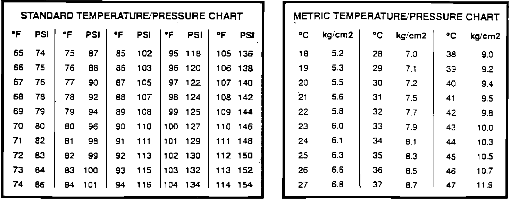

Checking Recycled Refrigerant
Recycled Refrigerant Temperature/Pressure Chart:

1. To check for excess non-condensable gases (air), keep container at 65°F (18.3°C) or above for 12 hours, out of direct sunlight.
2. Connect pressure gauge, calibrated in 1 psi divisions (0.1 kg/cm2), to container and read pressure.
3. Measure air temperature within 4 inches (10 cm) of container with accurate thermometer.
4. Compare pressure to image charts. Determine if pressure is at or below limits shown.
5. If pressure is lower than limit shown for a given temperature, refrigerant is okay to use as is.
6. If pressure is higher than limit shown for a given temperature, slowly vent vapor from top of container into recovery/recycling unit. Continue until pressure falls below limit shown in charts.
7. If container pressure still exceeds limits shown, recycle entire contents.